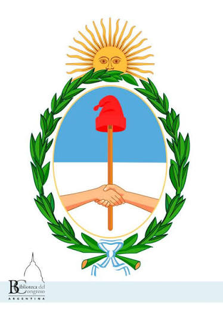

¿Qué son las efemérides escolares?
Las efemérides escolares son fechas que permiten recordar y estudiar acontecimientos importantes de la historia, la cultura y la sociedad. En la escuela ayudan a relacionar el pasado con el presente y a comprender cómo se construyó nuestra identidad colectiva.
El 25 de mayo es una de las fechas patrias centrales de la Argentina porque recuerda la formación de la Primera Junta de Gobierno en Buenos Aires, en 1810, después de una semana de debates y movilización política.
Introducción a la historia argentina
En 1810, el territorio formaba parte del Virreinato del Río de la Plata. La crisis de la monarquía española, las invasiones inglesas y los cambios políticos en Europa generaron un escenario en el que distintos grupos de Buenos Aires discutieron quién debía ejercer el gobierno.
El 25 de mayo, el virrey Baltasar Hidalgo de Cisneros dejó el poder y se constituyó la Primera Junta, presidida por Cornelio Saavedra. Este hecho inició un proceso revolucionario que más adelante conduciría a la declaración de la independencia en 1816.
Línea histórica de acontecimientos principales
1808
La invasión napoleónica a España profundizó la crisis de la monarquía y afectó la legitimidad de las autoridades coloniales.
18–22 de mayo de 1810
Se desarrolla la Semana de Mayo y se convoca el Cabildo Abierto del 22 de mayo para debatir la continuidad del virrey.
24 de mayo
La propuesta de mantener a Cisneros en una Junta genera rechazo y aumenta la presión política.
25 de mayo
Se forma la Primera Junta, considerada el primer gobierno patrio de nuestro país.
9 de julio de 1816
El Congreso reunido en Tucumán declara la independencia de las Provincias Unidas.
¿Qué importancia tuvo el 25 de Mayo?
El 25 de Mayo tuvo una enorme importancia porque abrió un camino de autogobierno y transformaciones políticas. No significó por sí solo la declaración inmediata de independencia, pero fue un punto de partida decisivo del proceso que llevaría a ella.
La fecha también permite estudiar la participación de autoridades, milicias y sectores de la población en la crisis política. El Museo Histórico Nacional destaca que la revolución combinó formas institucionales, como el Cabildo Abierto, con la movilización popular y militar.
Contexto histórico, acontecimiento e importancia actual
Personajes centrales
- Cornelio Saavedra: presidente de la Primera Junta.
- Mariano Moreno: secretario de la Junta y figura destacada del proceso revolucionario.
- Juan José Paso: secretario de la Junta.
- Manuel Belgrano: vocal de la Primera Junta.
- Juan José Castelli: vocal y protagonista de las acciones revolucionarias posteriores.
Fechas clave
| Fecha | Acontecimiento | Importancia |
|---|---|---|
| 18 de mayo | Noticias sobre la crisis de la autoridad española | Aumenta la tensión política. |
| 22 de mayo | Cabildo Abierto | Se debate la continuidad del virrey. |
| 24 de mayo | Junta presidida por Cisneros | Es rechazada por sectores revolucionarios. |
| 25 de mayo | Primera Junta | Se establece el primer gobierno patrio. |
Galería y recursos



Multimedia
El proyecto incluye una animación educativa original y recursos visuales. La animación resume el proceso histórico en forma breve.
Video educativo animado original realizado para acompañar la página.